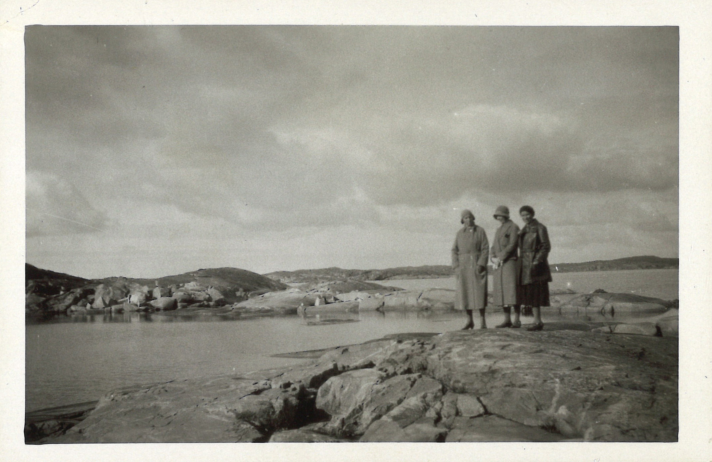
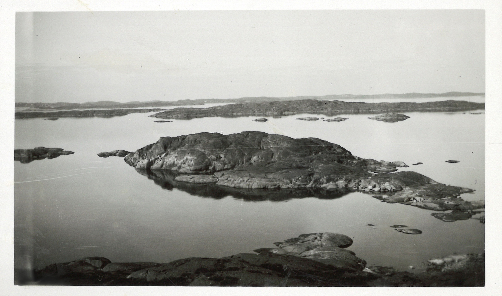
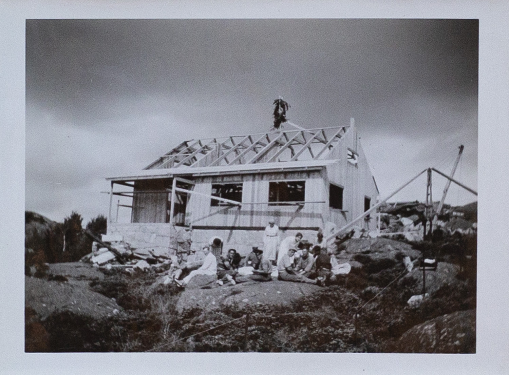
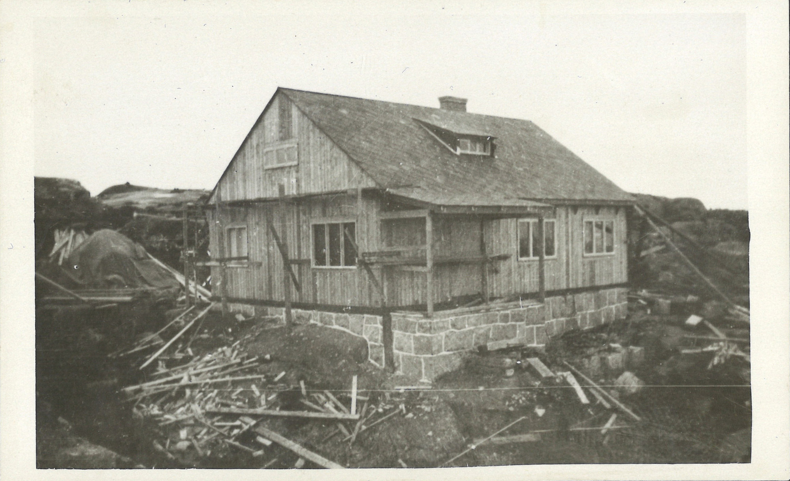

Ett svartvitt fotografi av två kvinnor i Göteborgs skärgård. De har kappor och hatt på sig. En av dem tittar mot kameran och en tittar ut mot havet.
Ett fotografi

Bildbeskrivning
Ett svartvitt fotografi av tre kvinnor som står på en klippa i Göteborgs skärgård.
Ett fotografi
Bildbeskrivning
Ett svartvitt fotografi av tre kvinnor som promenerar över klipporna i Göteborgs skärgård. De har alla tre ryggarna mot kameran.
"Utsikten"

Bildbeskrivning
Ett svartvitt fotografi av utsikten över Göteborgs skärgård. På bilden syns flera skär i havet.
"Taklagsfest"
Bildbeskrivning
Ett fotografi
Ett svartvitt fotografi av män och kvinnor som sitter på några klippor och fikar. I bakgrunden skymtar fasaden på systrarnas sommarstuga. Den är omålad och fönstren har inte än blivit insatta.
"Taklagsfest"

Bildbeskrivning
Ett svartvitt fotografi av stugan under byggnation. Fasaden är rest men fönster och tak saknas. På en påle som sticker upp över taknocken är ett ris fastsatt. Framför byggnaden sitter en samling män och kvinnor på klipporna.
"Stugan under byggnad våren 1933"

Bildbeskrivning
Ett svartvitt fotografi av systrarnas sommarstuga under byggnation. Fasad, tak och fönster är färdiga. Stugan är omålad och är omgärdad av byggställningar. På klipporna framför stugan ligger träplankor och byggspillror.